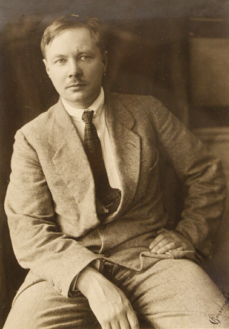

RuArt
RuArt Ваш гид по русскому исскуству XX века
Погрузитесь в мир авангарда, соцреализма и супрематизма


РУССКОЕ ИСКУССТВО ХХ ВЕКА
Михаил Фёдорович Ларионов — российский живописец, график, сценограф, теоретик искусства, один из основоположниковрусского авангарда. .

Родившись в Тирасполе, он навсегда сохранил в своем сердце образы южной природы, которые с упоением писал в ранний период, создавая полотна, полные света и воздуха . Учеба в Московском училище живописи у таких мэтров, как Серов и Коровин, заложила блестящую профессиональную основу, однако бунтарский дух Ларионова не давал ему оставаться в рамках традиции .
Став одним из главных зачинщиков художественных скандалов, он организовал выставки «Бубновый валет» и «Ослиный хвост», бросив вызов академическому искусству . В этот период Ларионов увлекся примитивизмом, находя вдохновение в городских вывесках, лубке и солдатском фольклоре. Его знаменитый «солдатский цикл» с нарочитой грубостью и экспрессией запечатлел стихию народной жизни .
Но главным вкладом Ларионова в мировое искусство стал лучизм — одно из первых направлений беспредметной живописи . Он предложил изображать не сами предметы, а пересекающиеся лучи энергии и света, исходящие от них. Это открывало путь к чистой, абстрактной игре цвета и формы, создавая на холсте динамичное сияние .
С 1915 года художник оказался в эмиграции во Франции, где вместе со своей спутницей жизни и талантливейшей художницей Наталией Гончаровой создавал легендарные декорации и костюмы для Русских балетов Дягилева, став неотъемлемой частью «русских сезонов» в Париже . На родину он так и не вернулся, но его искусство, завещанное России, и по сей день остается эталоном смелого эксперимента и неиссякаемой творческой энергии .